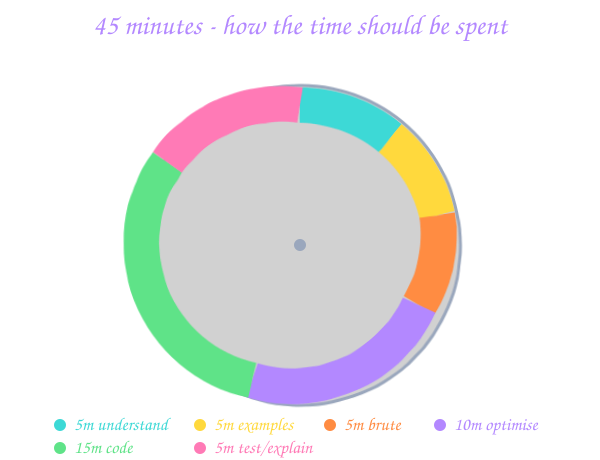

01 The communication loop while coding Silence is the candidate's #1 killer. ▾
The 4-beat cadence
- Think out loud. "OK, I'm noticing the array is sorted. That makes me think two pointers…"
- Announce intent. "Let me code the two-pointer version. I'll initialise
l = 0, r = n - 1." - Narrate as you type. "Inside the loop, I check if the sum equals target…"
- Check in. Every 2-3 minutes: "Does this look right so far?" or "Should I keep going or pause here?"
Phrases that earn you points
Use these
"My first instinct is… but let me think if there's a better way."
"Before I code, let me make sure I understand the contract."
"I'd like to walk through an example to verify my approach."
"This is O(n) time, O(n) space — could I do it in O(1) space?"
"Let me dry-run the code with the example."
Avoid these
Silence for > 60 seconds.
"This is easy" (almost always wrong).
"I memorised this one."
"I've never seen this before" (just say "let me reason through it").
Asking the interviewer to confirm every line.
02 Clarifying-question checklist 5 questions you should ask before you write a single character. ▾
The universal 5
- Input type & size. "Is the input an array of ints or longs? What's the max length? Can it be empty?"
- Output format. "Return indices or values? In any order or sorted? In place or new array?"
- Constraints. "Are values unique? Sorted? Positive only? Range?"
- Edge cases the problem ignores. "What if no solution exists — return -1, throw, or empty?"
- Performance expectation. "Should I aim for O(n) or is O(n log n) acceptable?"
Question patterns that signal seniority
- "Should I optimise for time or space?"
- "Can the input have duplicates? What should happen to them?"
- "Is this a one-shot call or will it be invoked repeatedly with new queries?" (huge swing — preprocess vs not).
- "What does the API return on invalid input — throw or sentinel value?"
03 Edge cases everyone forgets The bug-hunt checklist you run before saying "done". ▾
The standard 10
- Empty input.
nums = [],s = "". - Single element.
nums = [5],head = single node. - All same.
nums = [3, 3, 3, 3]. - Already sorted / reverse sorted. Often hits worst-case in your algorithm.
- Duplicates. Easy to skip incorrectly.
- Negatives. Sign-flipping bugs, overflow in absolute value.
- Boundary values.
INT_MIN,INT_MAX, 0, 1. - Overflow.
intsum of two big ints in Java → uselong. - Cycle / loop. Linked list with a cycle → your traversal hangs.
- Unicode / special chars. Strings with spaces, emoji, accents.
'A'.toLowerCase()is fine;'\u0130'isn't.
The "tracer bullet" pattern
After you finish coding, pick one normal example AND one edge case. Walk both through the code line-by-line, narrating: "OK, l is 0, r is 4, mid is 2…". Bugs reveal themselves.
04 Time management in 45 minutes Minute-by-minute spending plan. ▾

The schedule
- 0-5 min — Understand & clarify. 5 questions, restate the problem.
- 5-10 min — Examples. Walk the given example. Invent 1 edge case.
- 10-15 min — Brute force. State it; only code if there's time pressure or it's not obvious.
- 15-25 min — Optimise. Find the inefficiency in brute. Propose the optimal. Get a thumbs-up before coding.
- 25-40 min — Code. Clean variable names, tight loops, narrate as you type.
- 40-45 min — Test. Dry-run example + 1 edge case. State complexity.
If you're behind schedule
- Stuck on optimal? Code the brute force at minute 20. Partial credit beats no credit.
- Bug at minute 35? Don't fix in head. Add a print statement / dry-run a tiny case.
- 5 minutes left, no test? Say "I'll walk through the example now — nums = [1,2,3]…". A confidently spoken trace counts as testing.
05 Projects round & STAR How to make a college project sound like real engineering. ▾
The STAR template
- Situation (15 sec) — the context. "Our college's event-registration site crashed during fest week, took 4 minutes per registration."
- Task (10 sec) — what was your responsibility. "I was the backend lead, in a team of 3."
- Action (60 sec) — what you did. Use "I" not "we" for your part. Mention specifics: language, framework, the key technical decision.
- Result (15 sec) — numbers. "Registration time dropped to 12 seconds, 8k students registered in 2 days, zero downtime."
What interviewers actually probe
- Trade-offs you made. "Why MongoDB and not Postgres?" Have a real answer.
- The hardest bug. What was it, how did you find it, what did you learn.
- What you'd do differently now. Self-awareness signal. Don't say "nothing".
- Your specific contribution. If you say "I built the auth", be ready to defend down to the JWT format.
Project red flags — avoid these phrases
Don't say
"It's a CRUD app for…"
"I used the MERN stack" (generic, no signal).
"My friend handled that part."
"I followed a YouTube tutorial."
Do say
"The main technical challenge was…"
"I picked <tech> because <trade-off>."
"I owned X end-to-end."
"I extended an open-source library by…"
06 HR round — survival kit The questions are predictable. Your answers shouldn't be. ▾
The 8 evergreens (have an answer for each)
- "Tell me about yourself." 60 seconds: who you are, what you've built, what you're looking for. Not your life story.
- "Why this company?" Cite a specific product / tech / value. Generic = -1.
- "Why should we hire you?" One sentence per: skill, project, attitude.
- "What's your biggest strength?" A concrete one with a story.
- "What's your biggest weakness?" Real but improving. Not "I work too hard". Try: "I tend to over-engineer; I now timebox my designs."
- "Where do you see yourself in 5 years?" A direction, not a job title. "Growing into a senior engineer who…".
- "Why are you leaving your current role / why this branch?" Honest, positive framing. Never bash old company.
- "Any questions for us?" Always have 2. Ask about team, mentorship, growth, the next 6 months. Never ask salary first.
Salary conversation (the awkward one)
- If asked for your expectation: "Based on my research for similar roles in this city, I'm targeting X to Y — though I'm open to discuss the full package."
- If they say "we offer fixed CTC for freshers": "Understood, I'd like to know the breakdown — base, joining bonus, ESOPs/RSUs, benefits."
- Don't quote a number with no homework. Use Glassdoor, AmbitionBox, LinkedIn for ranges.
Lies that come back to haunt
- "I'm proficient in C++" but stutter on virtual destructors.
- "I built the backend solo" but the GitHub history shows 4 contributors.
- Inflated CGPA, inflated internship duration. Background checks are real.
07 Company-tier playbook (India) What each tier actually tests — and how to prep for each. ▾

Tier 1 - Service companies (TCS, Infosys, Wipro, Cognizant, Capgemini, Accenture)
Hires: bulk, often hundreds per campus. CTC ~3.5-7 LPA.
Process:
- Aptitude test (online proctored): quant, logical reasoning, English, basic coding.
- Technical interview (~30 min): DSA easy/medium (arrays, strings, basic OOP), language fundamentals, project walkthrough.
- HR / Managerial: the 8 evergreens, willingness to relocate, joining bond.
What to prep: aptitude (IndiaBix / PrepInsta), CS fundamentals (OS / DBMS / OOP / Networks for 1 week), <50 LeetCode easy/medium. Don't over-study DP.
Tier 2 - Mid-tier product (Zoho, Freshworks, ThoughtWorks, Flipkart, Walmart, P&G, GE)
Hires: selective, ~20-50 per campus. CTC ~10-25 LPA.
Process:
- Online coding round: 2-3 problems, mostly medium difficulty.
- Technical 1: 1-2 DSA mediums + project deep-dive.
- Technical 2: 1 hard or LLD round ("design a TinyURL class").
- Behavioural / Bar-raiser: motivation, culture fit, situational questions.
What to prep: top 150 LeetCode interview list (Neetcode 150 / Striver 79), 1 polished project with real engineering, OOP / SOLID, basic LLD (parking lot / library).
Tier 3 - Big product / FAANG (Google, Microsoft, Amazon, Adobe, Atlassian, Uber)
Hires: very selective. CTC ~30 LPA+ (often much more with stock).
Process:
- Online assessment: 2 medium-hard problems in ~75 min.
- Phone screen: 1-2 DSA problems with a real engineer.
- On-site / virtual loop: 4-5 rounds — 2 DSA (medium-hard), 1 LLD, 1 HLD (for SDE-1 sometimes scaled-down), 1 behavioural / bar-raiser.
What to prep: ~300 LeetCode (Neetcode 250+, Blind 75, then company tag), LLD deep (design patterns + walkthroughs), behavioural with STAR. For Amazon — the 16 Leadership Principles.
How to allocate prep time (40 hrs/week, 3 months)
If aiming Tier 1
50% aptitude.
30% CS fundamentals.
20% DSA easy/medium.
If aiming Tier 2
20% aptitude.
15% CS fundamentals.
50% DSA medium.
15% projects + LLD.
If aiming Tier 3
5% aptitude.
60% DSA medium-hard.
20% LLD/HLD.
15% behavioural + projects.
08 The week before D-day Revision, sleep, no new tricks. ▾
The 7-day plan
- Day -7 to -5: Re-do 2 problems from each pattern. Time yourself. Goal: muscle memory.
- Day -4 to -3: Review templates (two pointers, sliding window, DP recurrence, BFS, DFS). Rewrite each from memory in your interview language.
- Day -2: 1 mock interview with a friend or Pramp. Practice talking out loud.
- Day -1: Light review only. Read your STAR notes. Pack your bag / set up your home rig. Sleep early.
- Day 0: Light breakfast, on time, glass of water, deep breath. You've earned this.
09 Day-of — on-site & virtual Logistics that prevent dumb misses. ▾
On-site / placement-drive checklist
- Reach venue 30 minutes early. Locate water + restroom.
- Carry: ID card, hall ticket / token, water bottle, 2 pens, charger, a printed resume copy.
- Eat a light meal — nothing heavy that will make you sleepy.
- Phone on silent. Don't doom-scroll while waiting.
Virtual interview checklist (now the default)
- Background: plain wall or tidy room. No "I'm in college" vibes.
- Lighting: face the window or a lamp. Avoid backlight (silhouette).
- Audio: wired headphones > AirPods > laptop mic. Test 10 min before.
- Internet: wired or 4G hotspot as backup. Restart router 30 min before.
- Browser: close 30 tabs. Only the meeting + coding editor.
- Camera angle: eye level. Stack books under laptop if needed.
- Coding editor: increase font size to 18+. Use the editor the interviewer suggests (CoderPad, HackerRank, etc).
Proctored online tests
- Read instructions twice — some platforms allow scratch paper, some don't.
- Don't leave the tab; don't open another. Auto-disqualification.
- Keep face in frame the whole time.
- If a question loads slowly, screenshot the timer and report at the end — many systems give time back.
10 Negotiation & offer evaluation CTC, base, ESOPs, bonuses — reading the offer letter without getting fooled. ▾
Decoding the offer
| Component | What it means | Watch out for |
|---|---|---|
| Base salary | Monthly take-home (post-deductions). | This is the real number. Demand 60-70% of CTC. |
| Joining bonus | One-time payout in month 1-3. | Usually clawback if you leave in < 1-2 yrs. |
| Performance bonus | Annual, % of base, tied to rating. | Often 0-15%. Treat the bottom end as real. |
| ESOPs / RSUs | Stock that vests over 4 years (often 25/25/25/25). | "Cliff" of 1 year — nothing if you leave early. |
| Retention bonus | Paid if you stay N years. | You can't deposit a promise. Discount it. |
| Variable / target | Theoretical max bonuses. | Marketing. Assume actuals are 60-70%. |
| Benefits | Insurance, PF, meal cards, gym, learning budget. | Add ~50-80k/yr value — not nothing. |
Negotiation moves that work for freshers
- Use competing offers. "Company X offered me Y. I'd prefer you — can you close the gap?" The single most effective move.
- Ask for joining bonus or relocation when base is fixed (common for tier-1 bulk hires). These are easier to flex than base.
- Negotiate level, not just rupees. SDE-1 vs SDE-2 at FAANG = a 30-50% CTC swing. Worth pushing if you have signals.
- Always negotiate in writing. Verbal promises evaporate.
- Stay polite, never threaten. "If you can do X, I'm ready to sign today" > "I'll go elsewhere".
Evaluating offer A vs offer B
Don't compare CTCs blindly. Compare:
- 2-year cash. Sum of base + bonus + vested stock through year 2. Most freshers leave within 2-3 years — that's your real horizon.
- Growth ceiling. Promo cadence, mentorship, tech stack relevance.
- WLB & manager quality. Talk to current employees on LinkedIn. The "bad team / good company" trap is real.
- Brand on resume. A 6-month FAANG stint can outweigh a 2-year unknown-startup tenure on future applications.
- City / commute / family. The cost of a stressful 1-hour commute is real.